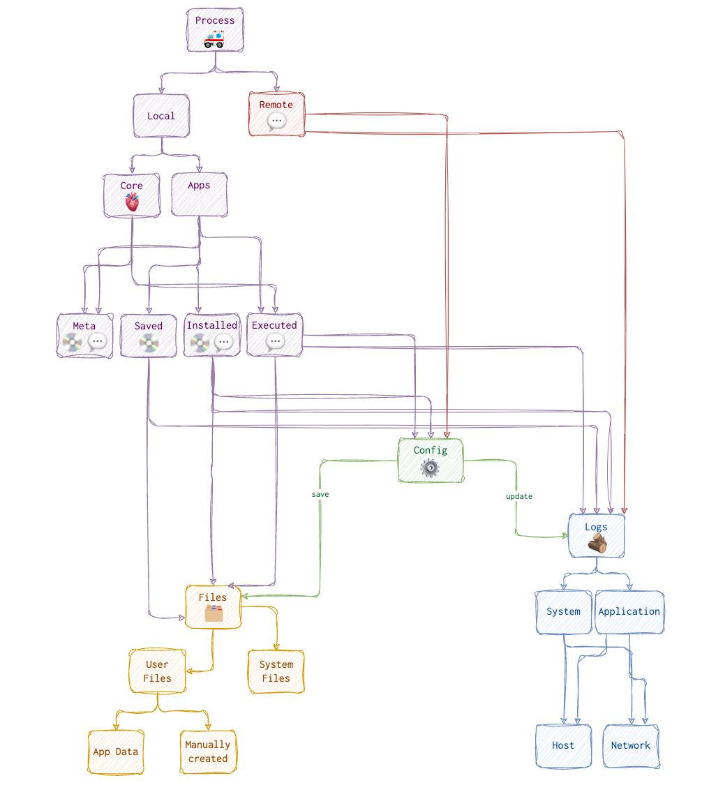
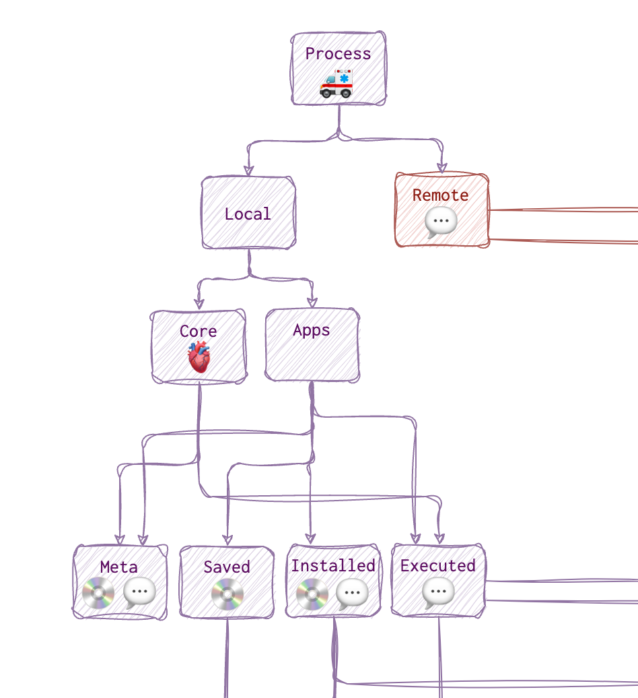
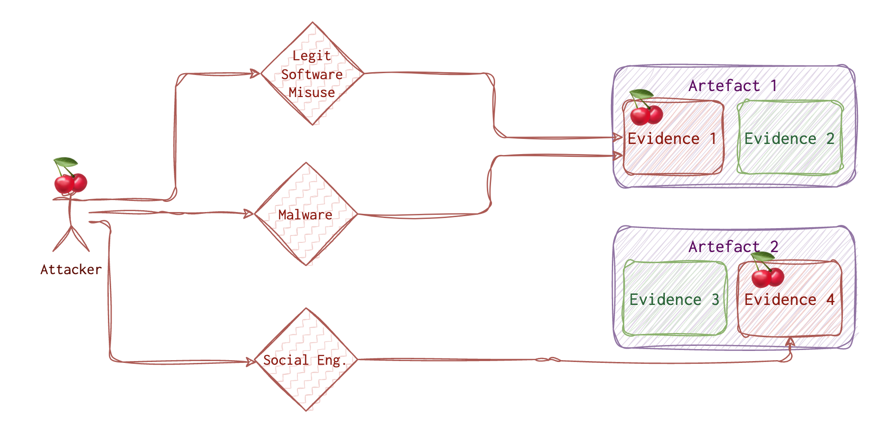
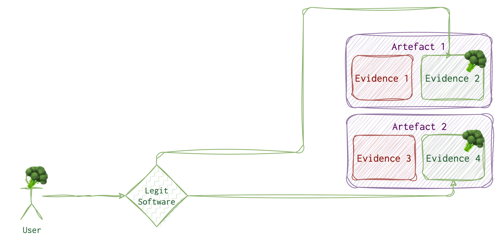
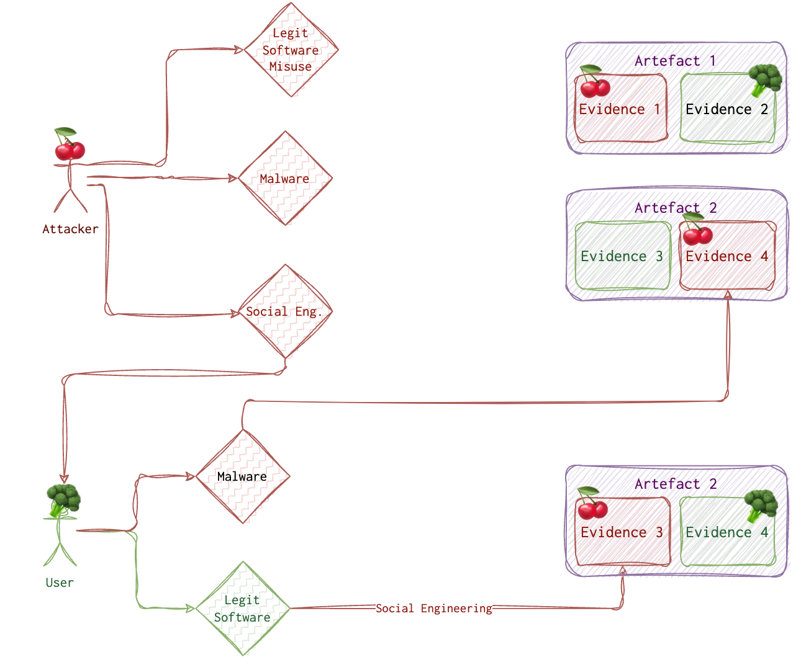

What are artefacts, and how are they different from evidence? What types of artefacts are there, and how to look them out? This article overviews artefacts, their categories and their analysis approach.
Everything happening on the computer 🖥️ or a mobile device 📱 (a little computer itself) is driven by a process. Which one? This is what we are answering during our investigation. Like when we say that everything is made of atoms or a file on a PC - it’s a simplification, but it allows us to break the problem down into a manageable set of smaller problems.
When in the morning, while coffee ☕️ is still too hot to drink, you open your mail ✉️ client to see what’s new, you are running a mail process that allows you to do that. You see than an email about your project and the attachment. You then save it to disk (your mail process ✉️ does that), then open it with some text editor 📝 process. You then see a notification about an upcoming meeting (the calendar 📆 process sends it to you), you log in to some video conference tool (yet another process) and talk to your colleagues. Behind the scenes, your PC uses a microphone, video drivers, and processes. So, everything on a system is a file, while a process creates everything created. That’s why it is so difficult to prove intent - processes create traces, not the users directly. We know that behind every process is a user (legit or not) or a system (basically another process!).
Below is a roadmap diagram for the artefacts and how these are connected.

Let’s start from the top. As we have already discovered, any trace on the system is left by a process 🚑. Information can reside either on disk 💿 or in RAM 💬. Now, not always, and not all processes are in RAM 💬 and on disk 💿. The process can be found in RAM 💬 only when executing and a while after that.
What the process looks like when executing and residing on disk (image file, we call it) - are sometimes two different things (in the case of polymorphic files, packed or encrypted). That’s why I have marked the executed rectangle with RAM 💬 only.
Also, if the attacker attacks the environment, it’s another story. While gaining remote access through some vulnerability or misconfiguration, no artefact on disk might show that. However, if this processes changes configuration, if the activity is logged on the system, or if the process creates files, we will see some on-disk artefacts.

Artefacts vs Evidence
Now, what’s an artefact, and what’s the evidence? When something happens on the machine, it leaves a trace. There are different locations these traces can be found; they are called artefacts. Artefacts include Windows registry, macOS plist files, file metadata, logs, etc. I have dedicated the whole section to various artefacts, their specifics and analysis tips. Those artefacts might have information valuable for the investigation and that we call evidence. Some examples of evidence are paths to malicious executables in the registry, executable names and passed arguments in the logs, malicious scripts, some strings found in a file etc. One can think of artefacts as roads 🛣️ and evidence as footprints on those roads 👣 and 🐾. The road remains the same, but there are multiple footprints of different types, and some indicate malicious activity. However, it’s not always easy or possible to tell who left the footprint and whether or not it was forged.
Both legitimate users and attackers produce the evidence by intentionally or inadvertently altering the artefacts. Intentional altering of artefacts is complex and only sometimes possible. There are several ways the attacker can perform activity on a system; let’s see what these are.

The attacker needs to do his job. So, the attacker needs to use some tools, and whatever he or she uses will leave a trace. Even wiping the traces leaves some traces. Although finding those traces is only sometimes straightforward, it’s usually possible. There are two options for the attacker:
- Physical access. One can steal a laptop or use the unlocked machine while the employee is having lunch.
- Remote access. Most of the time, the attacker doesn’t have physical access and needs to do some research and crafting to get the “treasure”.
There are various ways to get initial access, and those techniques are well covered on the MITRE website. Once this access is acquired, the attacker has limited options to go forward with. One of them and frequently used by the attacker, is using some malware 🦠. Of course, he needs to deliver this malware to the system and run it. Running malware leaves traces 🐾. Sometimes (quite often), the attacker will try to use the legitimate tools already preinstalled on the target machine. And guess what? These tools also leave traces 👣! The trick here is to investigate WHO ran this tool 🤔.
Another option the attacker 🍒 has is social engineering vector, including various phishing attacks, tailgating etc. But eventually, this also comes to running something on a machine, be it a legit program or not so much.

Let’s imagine a legitimate ordinary user with no malicious intent or malware installed. What would their daily activity look like? Also, running some programs which, of course, leave some traces.
But how do we distinguish between a legitimate user 🥦 and an attacker 🍒? When we find malware, and we see its traces 🐾 on the system, it’s one story. But what if the attacker got remote access to the system and used a legit tool on the user’s 🥦 behalf? What if the attacker 🍒 has tricked the user 🥦 into running something evil? How do we know it’s 👣 and not 🐾? Sometimes we don’t.
